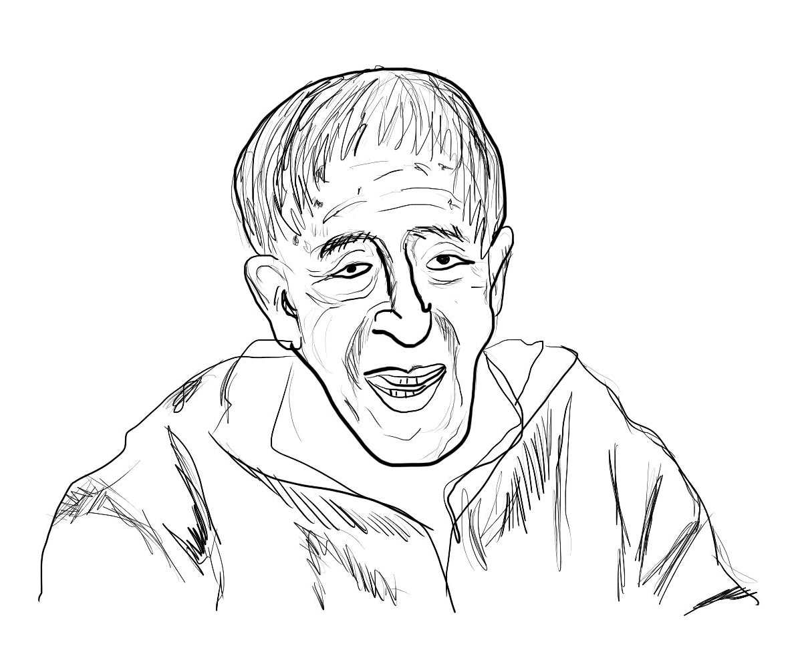

|

|
Mis tíos siempre corrían las cortinas de la ventana para que no pudiese ver las procesiones por los muertos.
A mis 103 años de edad aún recuerdo aquellos hechos que sucedieron cuando tenía tan solo 4 años de edad.
Miraba con curiosidad las calles de Luarca, la pequeña villa pesquera de Asturias en el norte de España donde nací y he vivido toda mi vida , hasta la actualidad. Había tantos muertos y yo me contagié de la gripe española en otoño.
Los síntomas que tenía, eran debilidad, neumonía, problemas estomacales, dificultad para respirar, confusión y fiebre. Fuí atendido por el médico de mi pueblo, que utilizaba vapores de eucalipto y algas marinas hervidas que se cocían en toneles de madera.
Aún no hay datos certeros del inicio de la pandemia que terminó llamandose "gripe española", pero desde aquel suceso al que sobreviví me vacuno contra la gripe y actualmente a mis 105 años de edad ha vuelto a ocurrir otra pandemia similar a la de hace 100 años.
|